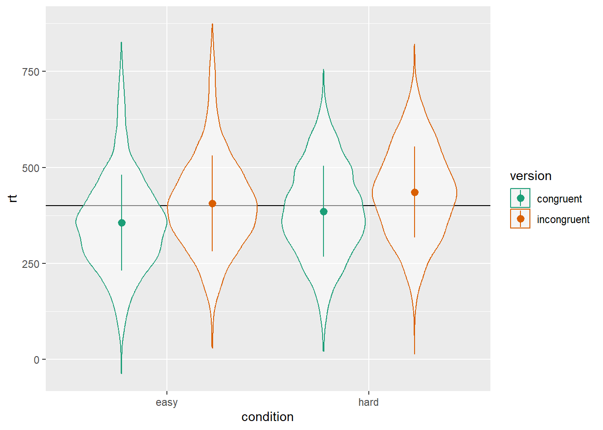
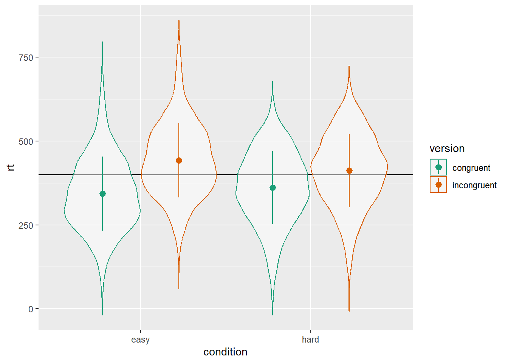
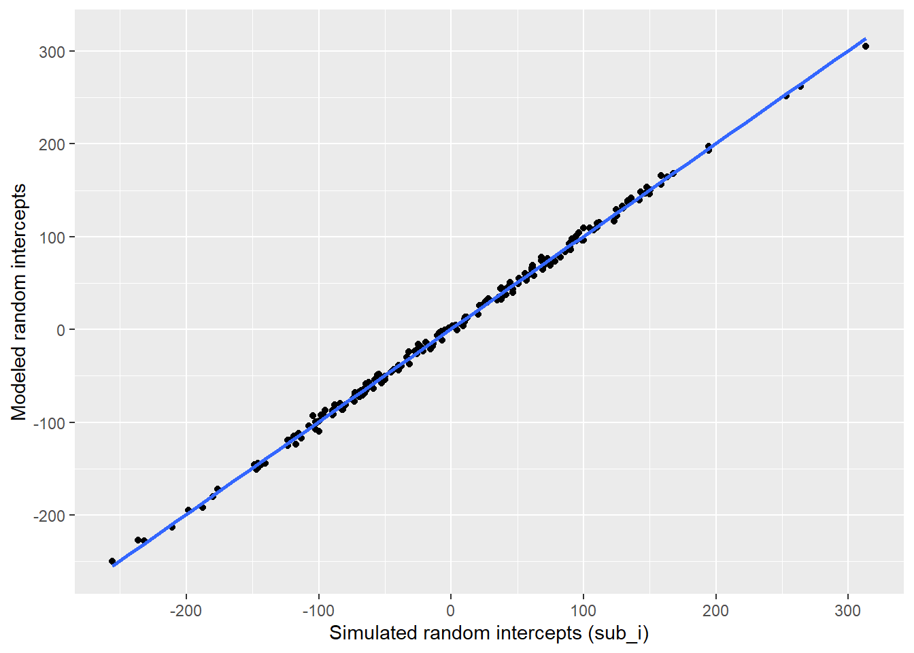
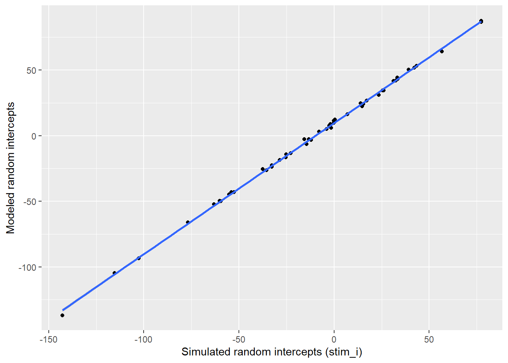
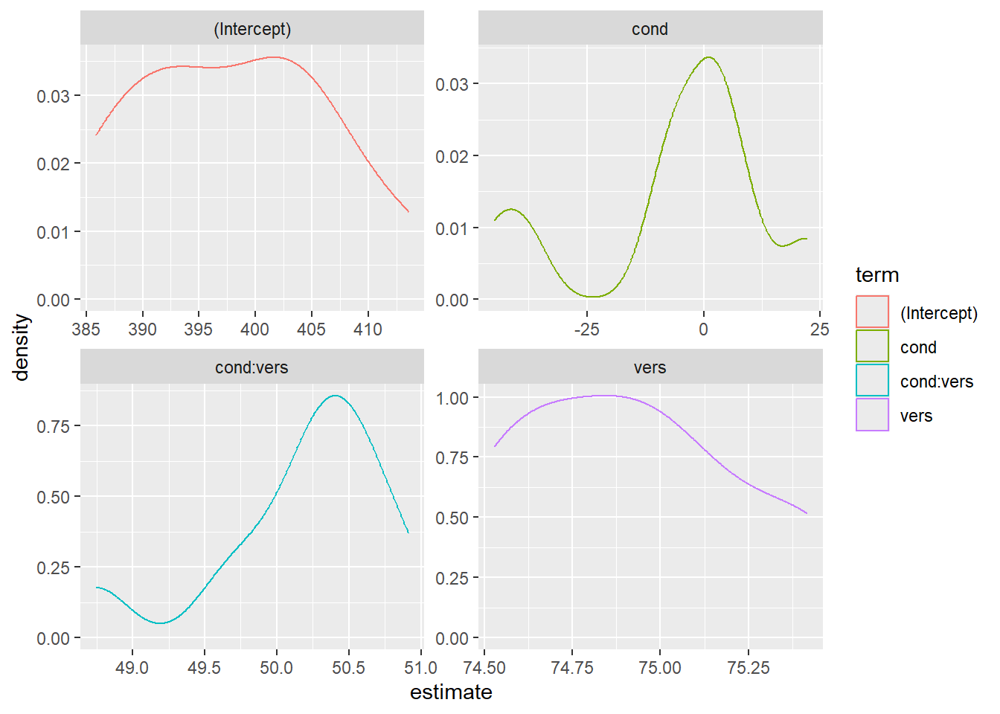
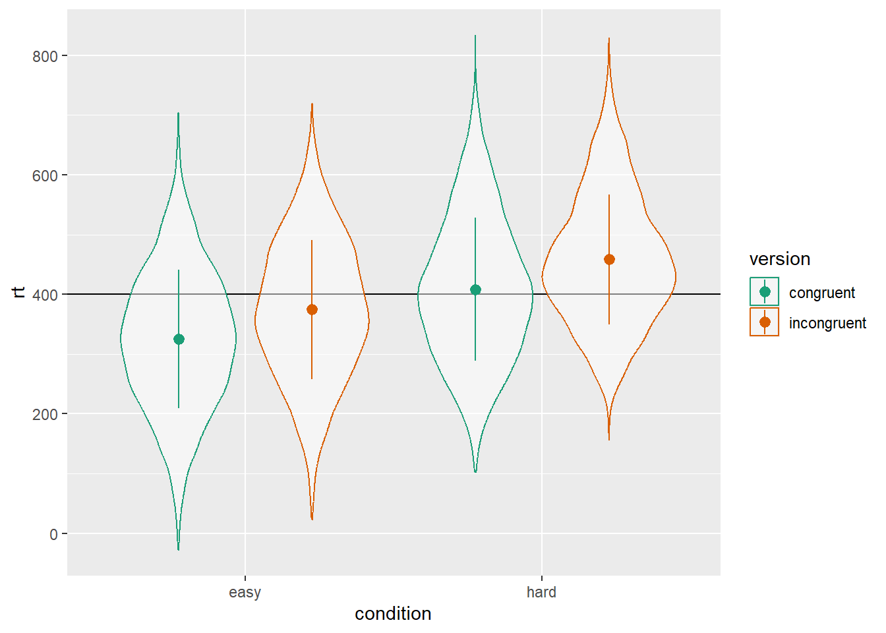

6 Introduction to linear mixed effects models
In this chapter, we will explore linear mixed effects models by simulating data. Experimental designs that sample both subjects and stimuli from a larger population need to account for random effects of both subjects and stimuli using mixed-effects models. However, much of this research is analyzed using analysis of variance on aggregated responses because researchers are not confident specifying and interpreting mixed-effects models. This chapter will explain how to simulate data with random-effects structure (using the faux R package) and analyze the data using linear mixed-effects regression (with the lme4 R package), with a focus on interpreting the output in light of the simulated parameters. You will also learn to calculate power using simulation.
6.1 Learning objectives
By the end of this chapter, you should be able to:
Understand how data are structured for a linear mixed effects model
Be able to simulate data with a cross-classified structure
Understand how to run and interpret a linear mixed effects model
Run a power calculation for LMEM
To follow along to this chapter and try the code yourself, please download the Rmd file we will be using in this zip file.
6.2 Packages and the data sets
We will simulate data using the faux package.
6.3 Simulation
First, we need to generate some data with the right structure for a mixed effects analysis. Here, we will simulate data for a Stroop task where subjects (sub) say the colour of colour words (stim) shown in each of two versions (congruent and incongruent). Subjects are in one of two conditions (hard or easy). The dependent variable is reaction time (`rt``).
We expect people to have faster reaction times for congruent stimuli than incongruent stimuli (main effect of version) and to be faster in the easy condition than the hard condition (main effect of condition). We’ll look at some different interaction patterns below.
6.3.1 Random Factors
First, set up the overall structure of your data by specifying the number of observations for each random factor. Here, we have a crossed design, so each subject responds to each stimulus. We’ll set the numbers to small numbers as a demo first.
6.3.2 Fixed Factors
Next, add the fixed factors. Specify if they vary between one of the random factors and specify the names of the levels.
Each subject is in only one condition, so the code below assigns half easy and half hard. You can change the proportion of subjects assigned each level with the .prob argument.
Stimuli are seen in both congruent and incongruent versions, so this will double the number of rows in our resulting data set.
sub_n <- 2 # number of subjects in this simulation
stim_n <- 2 # number of stimuli in this simulation
dat <- add_random(sub = sub_n) |>
add_random(stim = stim_n) |>
add_between(.by = "sub", condition = c("easy","hard")) |>
add_within(version = c("congruent", "incongruent"))
dat| sub | stim | condition | version |
|---|---|---|---|
| sub1 | stim1 | easy | congruent |
| sub1 | stim1 | easy | incongruent |
| sub1 | stim2 | easy | congruent |
| sub1 | stim2 | easy | incongruent |
| sub2 | stim1 | hard | congruent |
| sub2 | stim1 | hard | incongruent |
| sub2 | stim2 | hard | congruent |
| sub2 | stim2 | hard | incongruent |
6.3.3 Contrast Coding
To be able to calculate the dependent variable, you need to recode categorical variables into numbers. Use the helper function add_contrast() for this. The code below creates anova-coded versions of condition and version. Luckily for us, the factor levels default to a sensible order, with “easy” predicted to have a faster (lower) reactive time than “hard”, and “congruent” predicted to have a faster RT than “incongruent”, but we can also customise the order of levels with add_contrast(); see the contrasts vignette for more details.
sub_n <- 2 # number of subjects in this simulation
stim_n <- 2 # number of stimuli in this simulation
dat <- add_random(sub = sub_n) |>
add_random(stim = stim_n) |>
add_between(.by = "sub", condition = c("easy","hard")) |>
add_within(version = c("congruent", "incongruent")) |>
add_contrast("condition") |>
add_contrast("version")
dat| sub | stim | condition | version | condition.hard-easy | version.incongruent-congruent |
|---|---|---|---|---|---|
| sub1 | stim1 | easy | congruent | -0.5 | -0.5 |
| sub1 | stim1 | easy | incongruent | -0.5 | 0.5 |
| sub1 | stim2 | easy | congruent | -0.5 | -0.5 |
| sub1 | stim2 | easy | incongruent | -0.5 | 0.5 |
| sub2 | stim1 | hard | congruent | 0.5 | -0.5 |
| sub2 | stim1 | hard | incongruent | 0.5 | 0.5 |
| sub2 | stim2 | hard | congruent | 0.5 | -0.5 |
| sub2 | stim2 | hard | incongruent | 0.5 | 0.5 |
The function defaults to very descriptive names that help you interpret the fixed factors. Here, “condition.hard-easy” means the main effect of this factor is interpreted as the RT for hard trials minus the RT for easy trials, and “version.incongruent-congruent” means the main effect of this factor is interpreted as the RT for incongruent trials minus the RT for congruent trials. However, we can change these to simpler labels with the colnames argument.
6.3.4 Random Effects
Now we specify the random effect structure. We’ll just add random intercepts to start, but will cover random slopes later.
Each subject will have slightly faster or slower reaction times on average; this is their random intercept (sub_i). We’ll model it from a normal distribution with a mean of 0 and SD of 100ms.
Each stimulus will have slightly faster or slower reaction times on average; this is their random intercept (stim_i). We’ll model it from a normal distribution with a mean of 0 and SD of 50ms (it seems reasonable to expect less variability between words than people for this task).
Run this code a few times to see how the random effects change each time. this is because they are sampled from populations.
sub_n <- 2 # number of subjects in this simulation
stim_n <- 2 # number of stimuli in this simulation
sub_sd <- 100 # SD for the subjects' random intercept
stim_sd <- 50 # SD for the stimuli's random intercept
dat <- add_random(sub = sub_n) |>
add_random(stim = stim_n) |>
add_between(.by = "sub", condition = c("easy","hard")) |>
add_within(version = c("congruent", "incongruent")) |>
add_contrast("condition", colnames = "cond") |>
add_contrast("version", colnames = "vers") |>
add_ranef(.by = "sub", sub_i = sub_sd) |>
add_ranef(.by = "stim", stim_i = stim_sd)
dat| sub | stim | condition | version | cond | vers | sub_i | stim_i |
|---|---|---|---|---|---|---|---|
| sub1 | stim1 | easy | congruent | -0.5 | -0.5 | -70.88001 | -37.35485 |
| sub1 | stim1 | easy | incongruent | -0.5 | 0.5 | -70.88001 | -37.35485 |
| sub1 | stim2 | easy | congruent | -0.5 | -0.5 | -70.88001 | 36.16864 |
| sub1 | stim2 | easy | incongruent | -0.5 | 0.5 | -70.88001 | 36.16864 |
| sub2 | stim1 | hard | congruent | 0.5 | -0.5 | -15.17107 | -37.35485 |
| sub2 | stim1 | hard | incongruent | 0.5 | 0.5 | -15.17107 | -37.35485 |
| sub2 | stim2 | hard | congruent | 0.5 | -0.5 | -15.17107 | 36.16864 |
| sub2 | stim2 | hard | incongruent | 0.5 | 0.5 | -15.17107 | 36.16864 |
6.3.5 Error Term
Finally, add an error term. This uses the same add_ranef() function, just without specifying which random factor it’s for with .by. In essence, this samples an error value from a normal distribution with a mean of 0 and the specified SD for each trial. We’ll also increase the number of subjects and stimuli to more realistic values now.
sub_n <- 200 # number of subjects in this simulation
stim_n <- 50 # number of stimuli in this simulation
sub_sd <- 100 # SD for the subjects' random intercept
stim_sd <- 50 # SD for the stimuli's random intercept
error_sd <- 25 # residual (error) SD
dat <- add_random(sub = sub_n) |>
add_random(stim = stim_n) |>
add_between(.by = "sub", condition = c("easy","hard")) |>
add_within(version = c("congruent", "incongruent")) |>
add_contrast("condition", colnames = "cond") |>
add_contrast("version", colnames = "vers") |>
add_ranef(.by = "sub", sub_i = sub_sd) |>
add_ranef(.by = "stim", stim_i = stim_sd) |>
add_ranef(err = error_sd)6.3.6 Calculate the DV
Now we can calculate the dependent variable (rt) by adding together an overall intercept (mean reaction time for all trials), the subject-specific intercept, the stimulus-specific intercept, and an error term, plus the effect of subject condition, the effect of stimulus version, and the interaction between condition and version.
We set these effects in raw units (ms). So when we set the effect of subject condition (sub_cond_eff) to 50, that means the average difference between the easy and hard condition is 50ms. Easy was coded as -0.5 and hard was coded as +0.5, which means that trials in the easy condition have -0.5 * 50ms (i.e., -25ms) added to their reaction time, while trials in the hard condition have +0.5 * 50ms (i.e., +25ms) added to their reaction time.
sub_n <- 200 # number of subjects in this simulation
stim_n <- 50 # number of stimuli in this simulation
sub_sd <- 100 # SD for the subjects' random intercept
stim_sd <- 50 # SD for the stimuli's random intercept
error_sd <- 25 # residual (error) SD
grand_i <- 400 # overall mean rt
cond_eff <- 50 # mean difference between conditions: hard - easy
vers_eff <- 50 # mean difference between versions: incongruent - congruent
cond_vers_ixn <- 0 # interaction between version and condition
dat <- add_random(sub = sub_n) |>
add_random(stim = stim_n) |>
add_between(.by = "sub", condition = c("easy","hard")) |>
add_within(version = c("congruent", "incongruent")) |>
add_contrast("condition", colnames = "cond") |>
add_contrast("version", colnames = "vers") |>
add_ranef(.by = "sub", sub_i = sub_sd) |>
add_ranef(.by = "stim", stim_i = stim_sd) |>
add_ranef(err = error_sd) |>
mutate(rt = grand_i + sub_i + stim_i + err +
(cond * cond_eff) +
(vers * vers_eff) +
(cond * vers * cond_vers_ixn) # in this example, this is always 0 and could be omitted
)As always, graph to make sure you’ve simulated the general pattern you expected.
ggplot(dat, aes(condition, rt, color = version)) +
geom_hline(yintercept = grand_i) +
geom_violin(alpha = 0.5) +
stat_summary(fun = mean,
fun.min = \(x){mean(x) - sd(x)},
fun.max = \(x){mean(x) + sd(x)},
position = position_dodge(width = 0.9)) +
scale_color_brewer(palette = "Dark2")
6.3.7 Interactions
If you want to simulate an interaction, it can sometimes be tricky to figure out what to set the main effects and interaction effect to. It can often be easier to think about the simple main effects for each cell. Create four new variables and set them to the deviations from the overall mean you’d expect for each condition (so they should add up to 0). Here, we’re simulating a small effect of version in the hard condition (50ms difference) and double that effect of version in the easy condition (100ms difference).
Use the code below to transform the simple main effects above into main effects and interactions for use in the equations below. This uses the sim_design() function from faux to set up a fixed-design simulated sample with the exact cell means above (using empirical = TRUE), runs a linear model on the data, and extracts the coefficients. This only works if you contrast-code the factors in the same way, and use the same formula as your LMEM. It doesn’t matter if you set the factors to between or within for this, so it’s easiest to set them all to between.
# simulated the data
fixed_data <- sim_design(
between = list(condition = c("easy","hard"),
version = c("congruent", "incongruent")),
mu = c(easy_congr, easy_incon, hard_congr, hard_incon),
dv = "rt",
empirical = TRUE,
plot = FALSE
) |>
# add the same contrasts you'll use in your LMEM
add_contrast("condition", colnames = "cond") |>
add_contrast("version", colnames = "vers")
# run the same formula using lm()
fixed_model <- lm(rt ~ cond * vers, data = fixed_data)
# extract and round the coefficients
fixed_coefs <- coef(fixed_model) |> round(2)
# assign the coefficients to the relevant variables
cond_eff <- fixed_coefs["cond"]
vers_eff <- fixed_coefs["vers"]
cond_vers_ixn <- fixed_coefs["cond:vers"]Then generate the rt the same way we did above, but also add the interaction effect multiplied by the effect-coded subject condition and stimulus version.
dat <- add_random(sub = sub_n) |>
add_random(stim = stim_n) |>
add_between(.by = "sub", condition = c("easy","hard")) |>
add_within(version = c("congruent", "incongruent")) |>
add_contrast("condition", colnames = "cond") |>
add_contrast("version", colnames = "vers") |>
add_ranef(.by = "sub", sub_i = sub_sd) |>
add_ranef(.by = "stim", stim_i = stim_sd) |>
add_ranef(err = error_sd) |>
mutate(rt = grand_i + sub_i + stim_i + err +
(cond * cond_eff) +
(vers * vers_eff) +
(cond * vers * cond_vers_ixn)
)ggplot(dat, aes(condition, rt, color = version)) +
geom_hline(yintercept = grand_i) +
geom_violin(alpha = 0.5) +
stat_summary(fun = mean,
fun.min = \(x){mean(x) - sd(x)},
fun.max = \(x){mean(x) + sd(x)},
position = position_dodge(width = 0.9)) +
scale_color_brewer(palette = "Dark2")
6.4 Analysis
Now we will run a linear mixed effects model with lmer and look at the summary.
Linear mixed model fit by REML. t-tests use Satterthwaite's method [
lmerModLmerTest]
Formula: rt ~ cond * vers + (1 | sub) + (1 | stim)
Data: dat
REML criterion at convergence: 187114.3
Scaled residuals:
Min 1Q Median 3Q Max
-3.8059 -0.6771 0.0008 0.6630 3.7988
Random effects:
Groups Name Variance Std.Dev.
sub (Intercept) 9449.4 97.21
stim (Intercept) 2065.5 45.45
Residual 618.8 24.88
Number of obs: 20000, groups: sub, 200; stim, 50
Fixed effects:
Estimate Std. Error df t value Pr(>|t|)
(Intercept) 389.6450 9.4121 169.9851 41.398 <2e-16 ***
cond -6.9206 13.7518 197.9999 -0.503 0.615
vers 74.8553 0.3518 19748.9999 212.782 <2e-16 ***
cond:vers -48.7761 0.7036 19748.9999 -69.325 <2e-16 ***
---
Signif. codes: 0 '***' 0.001 '**' 0.01 '*' 0.05 '.' 0.1 ' ' 1
Correlation of Fixed Effects:
(Intr) cond vers
cond 0.000
vers 0.000 0.000
cond:vers 0.000 0.000 0.0006.4.1 Sense checks
First, check that your groups make sense.
- The number of obs should be the total number of trials analysed.
-
subshould be what we setsub_nto above. -
stimshould be what we setstim_nto above.
| Random.Fator | value | parameters |
|---|---|---|
| sub | 200 | 200 |
| stim | 50 | 50 |
Next, look at the random effects.
- The SD for
subshould be nearsub_sd. - The SD for
stimshould be nearstim_sd. - The residual SD should be near
error_sd.
| Groups | Name | SD | parameters |
|---|---|---|---|
| sub | (Intercept) | 97 | 100 |
| stim | (Intercept) | 45 | 50 |
| Residual | NA | 25 | 25 |
Finally, look at the fixed effects.
- The estimate for the Intercept should be near the
grand_i. - The main effect of
condshould be near what we calculated forcond_eff. - The main effect of
versshould be near what we calculated forvers_eff. - The interaction between
cond:versshould be near what we calculated forcond_vers_ixn.
| Effect | Estimate | parameters |
|---|---|---|
| (Intercept) | 390 | 400 |
| cond | -7 | 0 |
| vers | 75 | 75 |
| cond:vers | -49 | -50 |
6.4.2 Random effects
Plot the subject intercepts from our code above (dat$sub_i) against the subject intercepts calculated by lmer (ranef(mod)$sub_id).
# get simulated random intercept for each subject
sub_sim <- dat |>
group_by(sub, sub_i) |>
summarise(.groups = "drop")
# join to calculated random intercept from model
sub_sim_mod <- ranef(mod)$sub |>
as_tibble(rownames = "sub") |>
rename(mod_sub_i = `(Intercept)`) |>
left_join(sub_sim, by = "sub")
# plot to check correspondence
sub_sim_mod |>
ggplot(aes(sub_i,mod_sub_i)) +
geom_point() +
geom_smooth(method = "lm", formula = y~x) +
xlab("Simulated random intercepts (sub_i)") +
ylab("Modeled random intercepts")
Plot the stimulus intercepts from our code above (dat$stim_i) against the stimulus intercepts calculated by lmer (ranef(mod)$stim_id).
# get simulated random intercept for each stimulus
stim_sim <- dat |>
group_by(stim, stim_i) |>
summarise(.groups = "drop")
# join to calculated random intercept from model
stim_sim_mod <- ranef(mod)$stim |>
as_tibble(rownames = "stim") |>
rename(mod_stim_i = `(Intercept)`) |>
left_join(stim_sim, by = "stim")
# plot to check correspondence
stim_sim_mod |>
ggplot(aes(stim_i,mod_stim_i)) +
geom_point() +
geom_smooth(method = "lm", formula = y~x) +
xlab("Simulated random intercepts (stim_i)") +
ylab("Modeled random intercepts")
6.4.3 Function
You can put the code above in a function so you can run it more easily and change the parameters. I removed the plot and set the argument defaults to the same as the example above with all fixed effects set to 0, but you can set them to other patterns.
sim_lmer <- function( sub_n = 200,
stim_n = 50,
sub_sd = 100,
stim_sd = 50,
error_sd = 25,
grand_i = 400,
cond_eff = 0,
vers_eff = 0,
cond_vers_ixn = 0) {
dat <- add_random(sub = sub_n) |>
add_random(stim = stim_n) |>
add_between(.by = "sub", condition = c("easy","hard")) |>
add_within(version = c("congruent", "incongruent")) |>
add_contrast("condition", colnames = "cond") |>
add_contrast("version", colnames = "vers") |>
add_ranef(.by = "sub", sub_i = sub_sd) |>
add_ranef(.by = "stim", stim_i = stim_sd) |>
add_ranef(err = error_sd) |>
mutate(rt = grand_i + sub_i + stim_i + err +
(cond * cond_eff) +
(vers * vers_eff) +
(cond * vers * cond_vers_ixn)
)
mod <- lmer(rt ~ cond * vers +
(1 | sub) +
(1 | stim),
data = dat)
return(mod)
}Run the function with the default values (so all fixed effects set to 0).
Warning in checkConv(attr(opt, "derivs"), opt$par, ctrl = control$checkConv, :
Model failed to converge with max|grad| = 0.00218895 (tol = 0.002, component 1)Linear mixed model fit by REML. t-tests use Satterthwaite's method [
lmerModLmerTest]
Formula: rt ~ cond * vers + (1 | sub) + (1 | stim)
Data: dat
REML criterion at convergence: 187219.9
Scaled residuals:
Min 1Q Median 3Q Max
-4.5583 -0.6718 -0.0079 0.6697 4.2774
Random effects:
Groups Name Variance Std.Dev.
sub (Intercept) 10934 104.56
stim (Intercept) 2291 47.87
Residual 621 24.92
Number of obs: 20000, groups: sub, 200; stim, 50
Fixed effects:
Estimate Std. Error df t value Pr(>|t|)
(Intercept) 383.0591 10.0263 174.1988 38.205 <2e-16 ***
cond 1.9853 14.7918 197.9753 0.134 0.893
vers 0.1509 0.3524 19749.0005 0.428 0.669
cond:vers -0.6116 0.7049 19749.0005 -0.868 0.386
---
Signif. codes: 0 '***' 0.001 '**' 0.01 '*' 0.05 '.' 0.1 ' ' 1
Correlation of Fixed Effects:
(Intr) cond vers
cond 0.000
vers 0.000 0.000
cond:vers 0.000 0.000 0.000
optimizer (nloptwrap) convergence code: 0 (OK)
Model failed to converge with max|grad| = 0.00218895 (tol = 0.002, component 1)Try changing some variables to simulate different patterns of fixed effects.
Linear mixed model fit by REML. t-tests use Satterthwaite's method [
lmerModLmerTest]
Formula: rt ~ cond * vers + (1 | sub) + (1 | stim)
Data: dat
REML criterion at convergence: 187507.9
Scaled residuals:
Min 1Q Median 3Q Max
-4.1725 -0.6709 0.0007 0.6713 3.8084
Random effects:
Groups Name Variance Std.Dev.
sub (Intercept) 11018.5 104.97
stim (Intercept) 2797.0 52.89
Residual 629.8 25.10
Number of obs: 20000, groups: sub, 200; stim, 50
Fixed effects:
Estimate Std. Error df t value Pr(>|t|)
(Intercept) 409.0266 10.5387 155.5888 38.812 <2e-16 ***
cond -14.9163 14.8491 198.0001 -1.005 0.316
vers 74.8284 0.3549 19748.9998 210.838 <2e-16 ***
cond:vers -48.6871 0.7098 19748.9998 -68.591 <2e-16 ***
---
Signif. codes: 0 '***' 0.001 '**' 0.01 '*' 0.05 '.' 0.1 ' ' 1
Correlation of Fixed Effects:
(Intr) cond vers
cond 0.000
vers 0.000 0.000
cond:vers 0.000 0.000 0.000How would you modify the function above to take the input of the four cell means (easy_congr, easy_incon hard_congr, hard_incon), instead of the coefficients (cond_eff, vers_eff, cond_vers_ixn)?
6.4.4 Power analysis
Calculating power for a LMEM can seem really tricky, but if you can simulate the data you expect, you can calculate power for anything!
First, wrap your simulation function inside of another function that takes the argument of a replication number, runs a simulated analysis, and returns a data table of the fixed and random effects (made with broom.mixed::tidy()). You can use purrr’s map_df() function to create a data table of results from multiple replications of this function. We’re only running 10 replications here in the interests of time, but you’ll want to run 100 or more for a proper power calculation.
You can then plot the distribution of estimates across your simulations.

You can also just calculate power as the proportion of p-values less than your alpha.
6.5 Random slopes
In the example so far we’ve ignored random variation among subjects or stimuli in the size of the fixed effects (i.e., random slopes).
First, let’s reset the parameters we set above.
sub_n <- 200 # number of subjects in this simulation
stim_n <- 50 # number of stimuli in this simulation
sub_sd <- 100 # SD for the subjects' random intercept
stim_sd <- 50 # SD for the stimuli's random intercept
error_sd <- 25 # residual (error) SD
grand_i <- 400 # overall mean rt
cond_eff <- 50 # mean difference between conditions: hard - easy
vers_eff <- 50 # mean difference between versions: incongruent - congruent
cond_vers_ixn <- 0 # interaction between version and condition6.5.1 Slopes
In addition to generating a random intercept for each subject, now we will also generate a random slope for any within-subject factors. The only within-subject factor in this design is version. The main effect of version is set to 50 above, but different subjects will show variation in the size of this effect. That’s what the random slope captures. We’ll set sub_vers_sd below to the SD of this variation and use this to calculate the random slope (sub_version_slope) for each subject.
Also, it’s likely that the variation between subjects in the size of the effect of version is related in some way to between-subject variation in the intercept. So we want the random intercept and slope to be correlated. Here, we’ll simulate a case where subjects who have slower (larger) reaction times across the board show a smaller effect of condition, so we set sub_i_vers_cor below to a negative number (-0.2).
We just have to edit the first add_ranef() to add two variables (sub_i, sub_vers_slope) that are correlated with r = -0.2, means of 0, and SDs equal to what we set sub_sd above and sub_vers_sd below.
sub_vers_sd <- 20
sub_i_vers_cor <- -0.2
dat <- add_random(sub = sub_n) |>
add_random(stim = stim_n) |>
add_between(.by = "sub", condition = c("easy","hard")) |>
add_within(version = c("congruent", "incongruent")) |>
add_contrast("condition", colnames = "cond") |>
add_contrast("version", colnames = "vers") |>
add_ranef(.by = "sub", sub_i = sub_sd,
sub_vers_slope = sub_vers_sd,
.cors = sub_i_vers_cor)6.5.3 Calculate the DV
Now we can calculate the rt by adding together an overall intercept (mean RT for all trials), the subject-specific intercept, the stimulus-specific intercept, the effect of subject condition, the stimulus-specific slope for condition, the effect of stimulus version, the stimulus-specific slope for version, the subject-specific slope for condition, the interaction between condition and version (set to 0 for this example), the stimulus-specific slope for the interaction between condition and version, and an error term.
dat <- add_random(sub = sub_n) |>
add_random(stim = stim_n) |>
add_between(.by = "sub", condition = c("easy","hard")) |>
add_within(version = c("congruent", "incongruent")) |>
add_contrast("condition", colnames = "cond") |>
add_contrast("version", colnames = "vers") |>
add_ranef(.by = "sub", sub_i = sub_sd,
sub_vers_slope = sub_vers_sd,
.cors = sub_i_vers_cor) |>
add_ranef(.by = "stim", stim_i = stim_sd,
stim_vers_slope = stim_vers_sd,
stim_cond_slope = stim_cond_sd,
stim_cond_vers_slope = stim_cond_vers_sd,
.cors = stim_cors) |>
add_ranef(err = error_sd) |>
mutate(
trial_cond_eff = cond_eff + stim_cond_slope,
trial_vers_eff = vers_eff + sub_vers_slope + stim_vers_slope,
trial_cond_vers_ixn = cond_vers_ixn + stim_cond_vers_slope,
rt = grand_i + sub_i + stim_i + err +
(cond * trial_cond_eff) +
(vers * trial_vers_eff) +
(cond * vers * trial_cond_vers_ixn)
)As always, graph to make sure you’ve simulated the general pattern you expected.
ggplot(dat, aes(condition, rt, color = version)) +
geom_hline(yintercept = grand_i) +
geom_violin(alpha = 0.5) +
stat_summary(fun = mean,
fun.min = \(x){mean(x) - sd(x)},
fun.max = \(x){mean(x) + sd(x)},
position = position_dodge(width = 0.9)) +
scale_color_brewer(palette = "Dark2")
6.6 Analysis
New we’ll run a linear mixed effects model with lmer and look at the summary. You specify random slopes by adding the within-level effects to the random intercept specifications. Since the only within-subject factor is version, the random effects specification for subjects is (1 + vers | sub). Since both condition and version are within-stimuli factors, the random effects specification for stimuli is (1 + vers*cond | stim).
This model will take a lot longer to run than one without random slopes specified. This might be a good time for a coffee break.
mod <- lmer(rt ~ cond * vers +
(1 + vers | sub) +
(1 + vers*cond | stim),
data = dat)
mod.sum <- summary(mod)
mod.sumLinear mixed model fit by REML. t-tests use Satterthwaite's method [
lmerModLmerTest]
Formula: rt ~ cond * vers + (1 + vers | sub) + (1 + vers * cond | stim)
Data: dat
REML criterion at convergence: 188355.9
Scaled residuals:
Min 1Q Median 3Q Max
-3.9599 -0.6694 0.0042 0.6623 3.9732
Random effects:
Groups Name Variance Std.Dev. Corr
sub (Intercept) 10007.2 100.04
vers 353.7 18.81 -0.16
stim (Intercept) 2367.9 48.66
vers 171.6 13.10 -0.51
cond 1180.1 34.35 -0.44 0.25
vers:cond 285.4 16.89 -0.56 0.36 0.32
Residual 624.7 24.99
Number of obs: 20000, groups: sub, 200; stim, 50
Fixed effects:
Estimate Std. Error df t value Pr(>|t|)
(Intercept) 391.554 9.870 162.280 39.670 < 2e-16 ***
cond 83.280 14.962 234.113 5.566 7.11e-08 ***
vers 49.453 2.308 102.640 21.430 < 2e-16 ***
cond:vers 1.256 3.644 163.942 0.345 0.731
---
Signif. codes: 0 '***' 0.001 '**' 0.01 '*' 0.05 '.' 0.1 ' ' 1
Correlation of Fixed Effects:
(Intr) cond vers
cond -0.099
vers -0.354 0.066
cond:vers -0.255 -0.045 0.1926.6.1 Sense checks
First, check that your groups make sense.
-
sub=sub_n(200) -
stim=stim_n(50)
| Random.Fator | value | parameters |
|---|---|---|
| sub | 200 | 200 |
| stim | 50 | 50 |
Next, look at the SDs for the random effects.
- Group:
sub-
(Intercept)~=sub_sd -
vers~=sub_vers_sd
-
- Group:
stim-
(Intercept)~=stim_sd -
vers~=stim_vers_sd -
cond~=stim_cond_sd -
vers:cond~=stim_cond_vers_sd
-
- Residual ~=
error_sd
| Groups | Name | SD | parameters |
|---|---|---|---|
| sub | (Intercept) | 100 | 100 |
| sub | vers | 19 | 20 |
| stim | (Intercept) | 49 | 50 |
| stim | vers | 13 | 10 |
| stim | cond | 34 | 30 |
| stim | vers:cond | 17 | 15 |
| Residual | NA | 25 | 25 |
The correlations are a bit more difficult to parse. The first column under Corr shows the correlation between the random slope for that row and the random intercept. So for vers under sub, the correlation should be close to sub_i_vers_cor. For all three random slopes under stim, the correlation with the random intercept should be near stim_i_cor and their correlations with each other should be near stim_s_cor.
Finally, look at the fixed effects.
-
(Intercept)~=grand_i -
sub_cond.e~=sub_cond_eff -
stim_version.e~=stim_vers_eff -
sub_cond.e:stim_version.e~=cond_vers_ixn
| Effect | Estimate | parameters |
|---|---|---|
| (Intercept) | 392 | 400 |
| cond | 83 | 50 |
| vers | 49 | 50 |
| cond:vers | 1 | 0 |
6.6.2 Function
You can put the code above in a function so you can run it more easily and change the parameters. I removed the plot and set the argument defaults to the same as the example above, but you can set them to other patterns.
sim_lmer_slope <- function( sub_n = 200,
stim_n = 50,
sub_sd = 100,
sub_vers_sd = 20,
sub_i_vers_cor = -0.2,
stim_sd = 50,
stim_vers_sd = 10,
stim_cond_sd = 30,
stim_cond_vers_sd = 15,
stim_i_cor = -0.4,
stim_s_cor = +0.2,
error_sd = 25,
grand_i = 400,
sub_cond_eff = 0,
stim_vers_eff = 0,
cond_vers_ixn = 0) {
dat <- add_random(sub = sub_n) |>
add_random(stim = stim_n) |>
add_between(.by = "sub", condition = c("easy","hard")) |>
add_within(version = c("congruent", "incongruent")) |>
add_contrast("condition", colnames = "cond") |>
add_contrast("version", colnames = "vers") |>
add_ranef(.by = "sub", sub_i = sub_sd,
sub_vers_slope = sub_vers_sd,
.cors = sub_i_vers_cor) |>
add_ranef(.by = "stim", stim_i = stim_sd,
stim_vers_slope = stim_vers_sd,
stim_cond_slope = stim_cond_sd,
stim_cond_vers_slope = stim_cond_vers_sd,
.cors = stim_cors) |>
add_ranef(err = error_sd) |>
mutate(
trial_cond_eff = cond_eff + stim_cond_slope,
trial_vers_eff = vers_eff + sub_vers_slope + stim_vers_slope,
trial_cond_vers_ixn = cond_vers_ixn + stim_cond_vers_slope,
rt = grand_i + sub_i + stim_i + err +
(cond * trial_cond_eff) +
(vers * trial_vers_eff) +
(cond * vers * trial_cond_vers_ixn)
)
mod <- lmer(rt ~ cond * vers +
(1 + vers | sub) +
(1 + vers*cond | stim),
data = dat)
return(mod)
}Run the function with the default values (null fixed effects).
Linear mixed model fit by REML. t-tests use Satterthwaite's method [
lmerModLmerTest]
Formula: rt ~ cond * vers + (1 + vers | sub) + (1 + vers * cond | stim)
Data: dat
REML criterion at convergence: 188115.1
Scaled residuals:
Min 1Q Median 3Q Max
-4.1938 -0.6535 0.0018 0.6614 3.9680
Random effects:
Groups Name Variance Std.Dev. Corr
sub (Intercept) 10490.3 102.42
vers 405.1 20.13 -0.12
stim (Intercept) 2851.9 53.40
vers 111.1 10.54 -0.39
cond 720.1 26.84 -0.46 0.43
vers:cond 166.2 12.89 -0.42 0.17 0.18
Residual 617.4 24.85
Number of obs: 20000, groups: sub, 200; stim, 50
Fixed effects:
Estimate Std. Error df t value Pr(>|t|)
(Intercept) 388.0982 10.4652 149.2332 37.085 <2e-16 ***
cond 26.7866 14.9777 221.8166 1.788 0.0751 .
vers 51.7489 2.0905 140.9327 24.755 <2e-16 ***
cond:vers 0.8172 3.4525 211.8457 0.237 0.8131
---
Signif. codes: 0 '***' 0.001 '**' 0.01 '*' 0.05 '.' 0.1 ' ' 1
Correlation of Fixed Effects:
(Intr) cond vers
cond -0.085
vers -0.258 0.078
cond:vers -0.161 -0.076 0.065Try changing some variables to simulate fixed effects.
Warning in checkConv(attr(opt, "derivs"), opt$par, ctrl = control$checkConv, :
Model failed to converge with max|grad| = 0.00215872 (tol = 0.002, component 1)Linear mixed model fit by REML ['lmerModLmerTest']
Formula: rt ~ cond * vers + (1 + vers | sub) + (1 + vers * cond | stim)
Data: dat
REML criterion at convergence: 188570.3
Random effects:
Groups Name Std.Dev. Corr
sub (Intercept) 106.04
vers 20.59 -0.25
stim (Intercept) 49.59
vers 11.36 -0.39
cond 28.45 -0.37 0.08
vers:cond 13.30 -0.44 0.34 0.38
Residual 25.12
Number of obs: 20000, groups: sub, 200; stim, 50
Fixed Effects:
(Intercept) cond vers cond:vers
409.496 39.132 50.436 1.762
optimizer (nloptwrap) convergence code: 0 (OK) ; 0 optimizer warnings; 1 lme4 warnings 6.7 Exercises
Calculate power for the parameters in the last example using the
sim_lmer_slope()function.Simulate data for the following design:
- 100 raters rate 50 faces from group A and 50 faces from group B
- The rt has a mean value of 50
- Group B values are 5 points higher than group A
- Rater intercepts have an SD of 5
- Face intercepts have an SD of 10
- The residual error has an SD of 8
For the design from exercise 2, write a function that simulates data and runs a mixed effects analysis on it.
The package
fauxhas a built-in dataset calledfr4. Type?faux::fr4into the console to view the help for this dataset. Run a mixed effects model on this dataset looking at the effect offace_sexon ratings. Remember to include a random slope for the effect of face sex and explicitly add a contrast code.Use the parameters from this analysis to simulate a new dataset with 50 male and 50 female faces, and 100 raters.